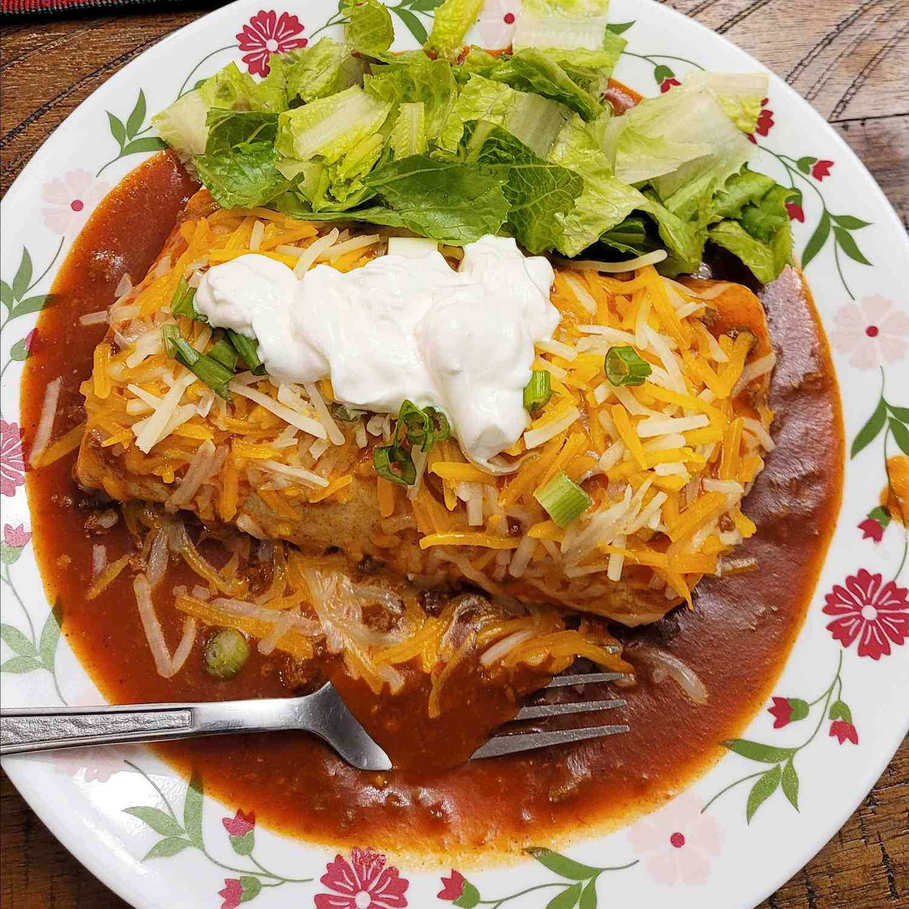

Fabulous Wet Burritos

Description
These wet burritos are very easy, yet very good. I got this recipe from a friend, and everyone I serve them to asks for the recipe.
Serve with guacamole, sour cream, and salsa.
Ingredients
- 1 pound ground beef
- 1 clove garlic, minced
- ½ teaspoon cumin
- ¼ teaspoon salt
- ⅛ teaspoon pepper
- 1 (16 ounce) can refried beans
- 1 (4.5 ounce) can diced green chile peppers
- 1 (15 ounce) can chili without beans
- 1 (10.5 ounce) can condensed tomato soup
- 1 (10 ounce) can enchilada sauce
- 6 (12 inch) flour tortillas, warmed
- 2 cups shredded lettuce, divided
- 1 cup chopped tomatoes, divided
- 2 cups shredded Mexican cheese blend, divided
- ½ cup chopped green onions, divided
Steps
- Crumble ground beef into a skillet over medium-high heat. Cook and stir until evenly browned. Add onion and cook until translucent. Drain grease, and season with garlic, cumin, salt, and pepper. Stir in refried beans and green chilies until well blended. Turn off heat but keep warm.
- Combine canned chili, condensed soup, and enchilada sauce in a saucepan. Mix well and cook over medium heat until heated through. Turn off the heat and keep warm.
- Place warmed tortilla on a plate and spoon a generous 1/2 cup of the ground beef mixture onto the center. Top with a portion of lettuce and tomato to your liking. Roll up tortilla around the filling, while tucking in the sides. Spoon a generous amount of the sauce over the top and sprinkle with a portion of cheese and green onions. Heat in the microwave until cheese is melted, about 30 seconds. Repeat with remaining tortillas and fillings